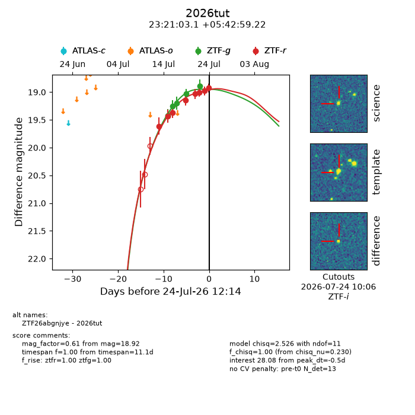
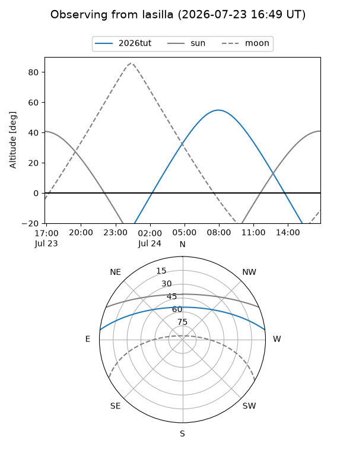
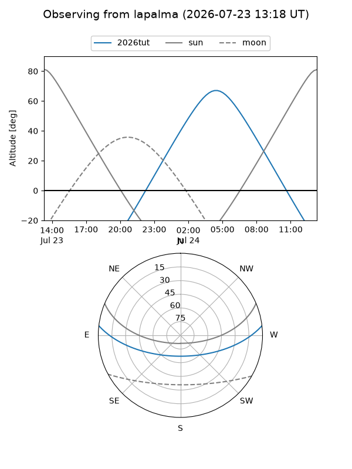
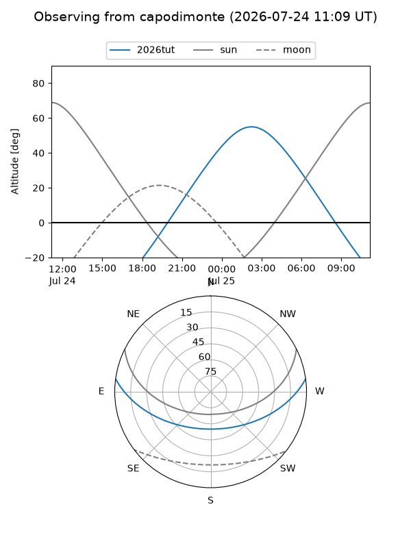
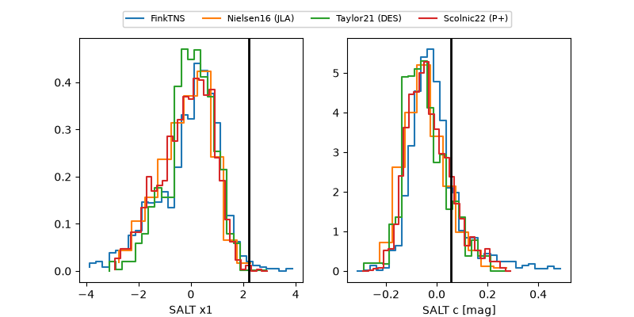

2026tut
Target 2026tut at 2026-07-24 12:16
Aliases and brokers:
FINK-ZTF: ztf.fink-portal.org/ZTF26abgnjye
Lasair-ZTF: lasair-ztf.lsst.ac.uk/objects/ZTF26abgnjye
ALeRCE-ZTF: alerce.online/object/ZTF26abgnjye
YSE-PZ: ziggy.ucolick.org/yse/transient_detail/2026tut
TNS name: wis-tns.org/object/2026tut
Direct TNS query: direct search
alt names
ZTF26abgnjye (ztf,fink_ztf)
2026tut (tns,yse)
Coordinates:
equatorial (ra, dec) = 350.2628,+5.71645
equatorial (HMS+DMS) = 23:21:03.07,+05:42:59.22
galactic (l, b) = (85.9408,-50.54837)
Flags:
TNS type: nan
peak dt: -0.5
Photometry:
last ztfg=18.89, ztfr=18.92
5 ztfg, 8 ztfr detections
Lightcurve

Visibility



Additional plots
